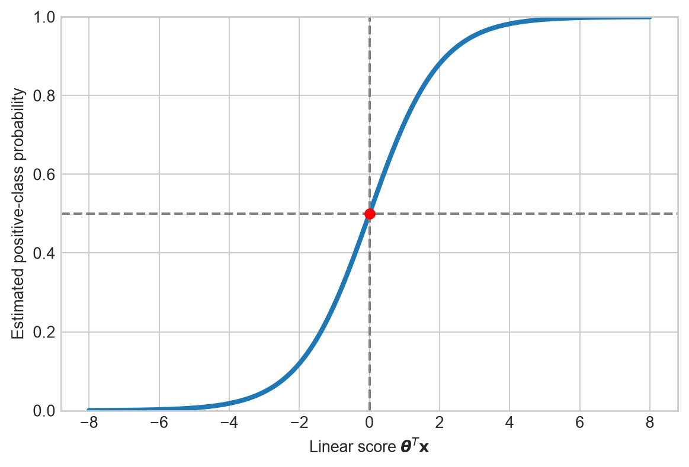
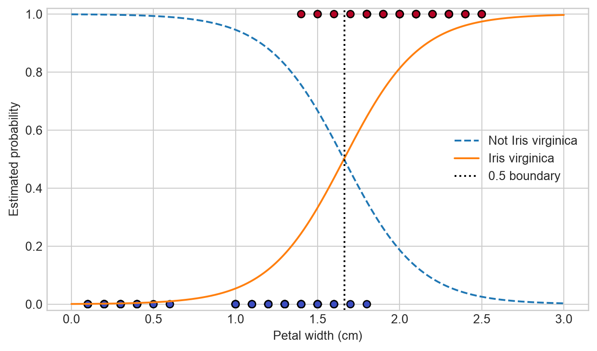
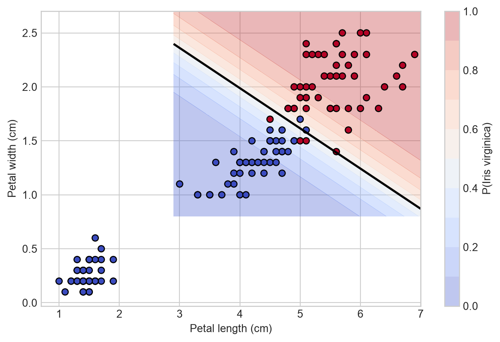
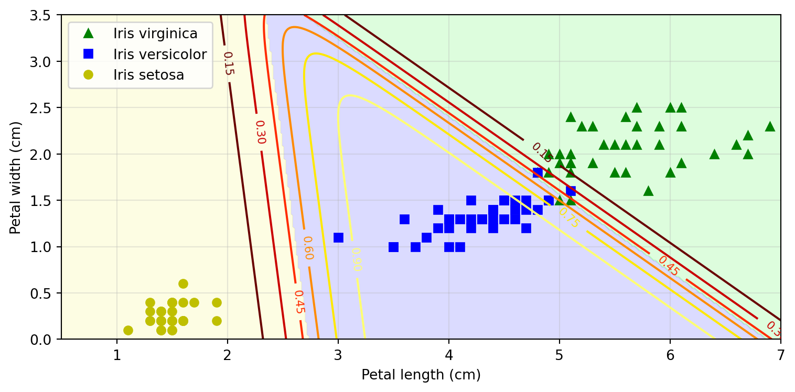

5 Chapter – Training Models
5.1 Logistic Regression
Logistic Regression, also called Logit Regression, is commonly used to estimate the probability that an instance belongs to a particular class. For example, it can estimate the probability that an email is spam.
If the estimated probability is greater than or equal to \(50\%\), the model predicts that the instance belongs to the positive class, usually labeled \(1\). Otherwise, it predicts that the instance belongs to the negative class, usually labeled \(0\).
Despite its name, Logistic Regression is therefore primarily used as a binary classification algorithm.
5.1.1 Estimating Probabilities
Logistic Regression begins by computing a weighted sum of the input features, including a bias term, just as Linear Regression does. However, instead of returning this score directly, it transforms it using the logistic function:
\[ \hat{p} = h_{\boldsymbol{\theta}}(\mathbf{x}) = \sigma\!\left(\mathbf{x}^{T}\boldsymbol{\theta}\right). \]
The logistic function, denoted by \(\sigma(\cdot)\), is a sigmoid-shaped function defined as
\[ \sigma(z)=\frac{1}{1+\exp(-z)}. \]
It transforms any real-valued score into a number between \(0\) and \(1\), allowing the output to be interpreted as a probability.
Once the model estimates the probability
\[ \hat{p}=h_{\boldsymbol{\theta}}(\mathbf{x}) \]
that an instance belongs to the positive class, it converts that probability into a class prediction using a threshold:
\[ \hat{y} = \begin{cases} 0, & \text{if } \hat{p}<0.5,\\ 1, & \text{if } \hat{p}\geq 0.5. \end{cases} \]
The value \(0.5\) is the default classification threshold, although a different threshold may be selected depending on the objectives and consequences of the classification problem.
5.1.2 Training Logistic Regression
Training Logistic Regression consists of finding the parameter vector \(\boldsymbol{\theta}\) that produces appropriate probabilities for the observed classes.
The objective is:
- For positive instances, where \(y=1\), the predicted probability \(\hat{p}\) should be close to \(1\).
- For negative instances, where \(y=0\), the predicted probability \(\hat{p}\) should be close to \(0\).
To achieve this objective, Logistic Regression minimizes a cost function known as log loss or binary cross-entropy.
Cost Function for a Single Training Instance
For a single observation, the cost is
\[ c(\boldsymbol{\theta}) = \begin{cases} -\log(\hat{p}), & \text{if } y=1,\\ -\log(1-\hat{p}), & \text{if } y=0. \end{cases} \]
This definition has an intuitive interpretation:
- Correct and confident predictions produce a cost close to \(0\).
- Incorrect predictions receive a larger penalty.
- Incorrect predictions made with high confidence receive an especially large penalty.
Why Use the Logarithm?
The logarithmic function offers two important advantages:
- It strongly penalizes confident errors.
- It contributes to a convex objective function that can be optimized efficiently using gradient-based methods.
Cost Function for the Entire Training Set
For a dataset containing \(m\) training instances, the average cost is
\[ J(\boldsymbol{\theta}) = -\frac{1}{m} \sum_{i=1}^{m} \left[ y^{(i)} \log\!\left(\hat{p}^{(i)}\right) + \left(1-y^{(i)}\right) \log\!\left(1-\hat{p}^{(i)}\right) \right]. \]
Training therefore consists of solving the optimization problem
\[ \boxed{ \min_{\boldsymbol{\theta}} J(\boldsymbol{\theta}) }. \]
The Logistic Regression cost function is convex. Consequently, gradient-based optimization does not become trapped in suboptimal local minima. Under appropriate optimization conditions, the algorithm converges toward a global minimizer.
The minimizer is not necessarily unique in every possible dataset—for example, redundant or perfectly collinear predictors may produce equivalent parameterizations—but the convexity of the objective remains an important computational advantage.
Gradient of the Cost Function
The partial derivative of the cost function with respect to parameter \(\theta_j\) is
\[ \frac{\partial J(\boldsymbol{\theta})} {\partial\theta_j} = \frac{1}{m} \sum_{i=1}^{m} \left[ \sigma\!\left( \boldsymbol{\theta}^{T}\mathbf{x}^{(i)} \right) - y^{(i)} \right] x_j^{(i)}. \]
For each training instance, the optimization algorithm:
- Computes the predicted probability.
- Calculates the difference between the prediction and the target.
- Multiplies this difference by the corresponding feature value.
- Averages the result across the training instances.
The resulting gradient indicates how the parameters should change to reduce the cost.
Batch Gradient Descent uses all training observations at each optimization step. Stochastic Gradient Descent uses one observation at a time, while Mini-batch Gradient Descent uses a small group of observations.
TipKey Takeaways
- Logistic Regression estimates class probabilities before producing class labels.
- The logistic function maps a linear score to the interval \((0,1)\).
- Log loss strongly penalizes confident incorrect predictions.
- The cost function is convex, so optimization is not affected by suboptimal local minima.
- Gradient-based algorithms can be used to estimate the model parameters efficiently.
5.1.3 Decision Boundaries
The Iris dataset provides a simple example of Logistic Regression. It contains sepal and petal measurements for 150 flowers belonging to three species:
- Iris setosa
- Iris versicolor
- Iris virginica

The following block imports the required tools and loads the dataset as a pandas DataFrame. Loading it with as_frame=True allows the predictors to be selected using their descriptive column names.
from sklearn import datasets
from sklearn.linear_model import LogisticRegression
from sklearn.model_selection import train_test_split
iris = datasets.load_iris(as_frame=True)
list(iris.keys())['data',
'target',
'frame',
'target_names',
'DESCR',
'feature_names',
'filename',
'data_module']The load_iris() function returns a dictionary-like Bunch object containing:
- the predictor matrix;
- the target variable;
- feature names;
- class names;
- metadata describing the dataset.
Binary Classification Using One Feature
Suppose the objective is to identify Iris virginica flowers using only petal width.
The original three-class target is transformed into a binary target:
False: the flower is not Iris virginica;True: the flower is Iris virginica.
The data is divided into training and test sets before fitting the model. The training set is used to estimate the parameters, while the test set is kept separate for later model evaluation.
Stratification preserves approximately the same class proportions in both subsets.
X = iris.data[["petal width (cm)"]].values
y = iris.target == 2
X_train, X_test, y_train, y_test = train_test_split(
X,
y,
test_size=0.25,
random_state=42,
stratify=y
)The Logistic Regression model is then fitted exclusively on the training data.
log_reg = LogisticRegression(random_state=42)
log_reg.fit(X_train, y_train)LogisticRegression(random_state=42)In a Jupyter environment, please rerun this cell to show the HTML representation or trust the notebook.
On GitHub, the HTML representation is unable to render, please try loading this page with nbviewer.org.
LogisticRegression(random_state=42)
Once trained, the model can estimate class probabilities for any possible petal width.
The following code creates a sequence of petal-width values, obtains the corresponding probabilities, and identifies the point at which the probability of Iris virginica reaches \(0.5\).
Show code
X_new = np.linspace(0, 3, 1000).reshape(-1, 1)
y_proba = log_reg.predict_proba(X_new)
decision_boundary = X_new[
y_proba[:, 1] >= 0.5
][0, 0]
plt.figure(figsize=(7, 3.5))
plt.plot(
X_new,
y_proba[:, 0],
"b--",
linewidth=2,
label="Not Iris virginica"
)
plt.plot(
X_new,
y_proba[:, 1],
"g-",
linewidth=2,
label="Iris virginica"
)
plt.plot(
[decision_boundary, decision_boundary],
[0, 1],
"k:",
linewidth=2,
label="Decision boundary"
)
plt.arrow(
x=decision_boundary,
y=0.08,
dx=-0.3,
dy=0,
head_width=0.05,
head_length=0.1,
fc="b",
ec="b"
)
plt.arrow(
x=decision_boundary,
y=0.92,
dx=0.3,
dy=0,
head_width=0.05,
head_length=0.1,
fc="g",
ec="g"
)
plt.plot(
X_train[y_train == 0],
y_train[y_train == 0],
"bs",
label="Training: not virginica"
)
plt.plot(
X_train[y_train == 1],
y_train[y_train == 1],
"g^",
label="Training: virginica"
)
plt.xlabel("Petal width (cm)")
plt.ylabel("Estimated probability")
plt.legend(loc="center left")
plt.axis([0, 3, -0.02, 1.02])
plt.grid(alpha=0.3)
plt.tight_layout()
plt.show()
The two curves represent the estimated probabilities of the two classes. For every observation, these probabilities sum to \(1\).
As petal width increases, the estimated probability of Iris virginica also increases. The vertical dotted line marks the decision boundary, where both probabilities are approximately \(0.5\).
Therefore:
- Petal widths below the boundary are classified as Not Iris virginica.
- Petal widths above the boundary are classified as Iris virginica.
The squares and triangles represent the training observations used to estimate the model.
The numerical value of the decision boundary can be inspected directly:
decision_boundarynp.float64(1.6666666666666667)The exact value may vary slightly depending on the training subset. This is expected because the model is fitted using only the observations assigned to the training set.
Once the model has been trained, new flowers can be classified using the predict() method.
log_reg.predict([[1.7], [1.5]])array([ True, False])The first observation has a petal width of 1.7 cm, while the second has a petal width of 1.5 cm.
Their predictions depend on which side of the learned decision boundary they fall. Instead of assuming a fixed boundary value in the explanation, the predictions should be interpreted relative to the boundary estimated in the preceding block.
The underlying probabilities can be obtained using predict_proba():
log_reg.predict_proba([[1.7], [1.5]])array([[0.46703281, 0.53296719],
[0.65270529, 0.34729471]])Each row contains the probabilities assigned to the two classes:
- The first column corresponds to Not Iris virginica.
- The second column corresponds to Iris virginica.
The predict() method returns the class with the highest estimated probability.
Logistic Regression Using Two Features
The previous model uses only petal width. Although this simplifies visualization, it ignores potentially useful information contained in other predictors.
The following example uses both petal length and petal width. In a two-dimensional feature space, the decision boundary is no longer a single threshold. Instead, it becomes a line separating two regions of the plane.
A new training-test split is created because the predictor matrix has changed.
X = iris.data[
["petal length (cm)", "petal width (cm)"]
].values
y = iris.target == 2
X_train, X_test, y_train, y_test = train_test_split(
X,
y,
test_size=0.25,
random_state=42,
stratify=y
)The model is then fitted using the two predictors.
log_reg_2d = LogisticRegression(
C=2,
random_state=42
)
log_reg_2d.fit(X_train, y_train)LogisticRegression(C=2, random_state=42)In a Jupyter environment, please rerun this cell to show the HTML representation or trust the notebook.
On GitHub, the HTML representation is unable to render, please try loading this page with nbviewer.org.
LogisticRegression(C=2, random_state=42)
The parameter C controls the inverse strength of regularization. Larger values of C correspond to weaker regularization, while smaller values impose stronger regularization.
Show code
x0, x1 = np.meshgrid(
np.linspace(2.9, 7, 500),
np.linspace(0.8, 2.7, 200)
)
X_new = np.c_[x0.ravel(), x1.ravel()]
y_proba = log_reg_2d.predict_proba(X_new)
zz = y_proba[:, 1].reshape(x0.shape)
left_right = np.array([2.9, 7])
boundary = -(
log_reg_2d.coef_[0, 0] * left_right
+ log_reg_2d.intercept_[0]
) / log_reg_2d.coef_[0, 1]
plt.figure(figsize=(7, 4))
plt.plot(
X_train[y_train == 0, 0],
X_train[y_train == 0, 1],
"bs",
label="Not Iris virginica"
)
plt.plot(
X_train[y_train == 1, 0],
X_train[y_train == 1, 1],
"g^",
label="Iris virginica"
)
contour = plt.contour(
x0,
x1,
zz,
cmap=plt.cm.brg
)
plt.clabel(
contour,
inline=True,
fontsize=8
)
plt.plot(
left_right,
boundary,
"k--",
linewidth=2,
label="Decision boundary"
)
plt.text(
3.5,
1.27,
"Not Iris virginica",
color="navy",
ha="center"
)
plt.text(
6.4,
2.3,
"Iris virginica",
color="darkgreen",
ha="center"
)
plt.xlabel("Petal length (cm)")
plt.ylabel("Petal width (cm)")
plt.axis([2.9, 7, 0.8, 2.7])
plt.grid(alpha=0.3)
plt.legend()
plt.tight_layout()
plt.show()
As shown in Figure 5.4, each point represents a training observation.
The dashed line is the linear decision boundary. It separates the feature space into two regions:
- Flowers on one side are classified as Not Iris virginica.
- Flowers on the other side are classified as Iris virginica.
The contour lines represent different estimated probabilities of belonging to the Iris virginica class.
Near the decision boundary, the predicted probability is close to \(0.5\), which indicates greater uncertainty. As an observation moves farther from the boundary, the model assigns increasingly extreme probabilities to one of the two classes.
5.1.4 Softmax Regression
Logistic Regression can be generalized to support more than two classes directly. This generalization is known as Softmax Regression or Multinomial Logistic Regression.
Given an instance \(\mathbf{x}\), the model first calculates a score for each class \(k\):
\[ s_k(\mathbf{x}) = \mathbf{x}^{T}\boldsymbol{\theta}^{(k)}. \]
Each class has its own parameter vector \(\boldsymbol{\theta}^{(k)}\). These class-specific vectors can be stored together in a parameter matrix \(\mathbf{\Theta}\).
Once the score for each class has been computed, the Softmax function transforms the scores into class probabilities:
\[ \hat{p}_k = \sigma\!\left(\mathbf{s}(\mathbf{x})\right)_k = \frac{ \exp\!\left(s_k(\mathbf{x})\right) }{ \sum_{j=1}^{K} \exp\!\left(s_j(\mathbf{x})\right) }. \]
In this expression:
- \(K\) is the number of classes.
- \(\mathbf{s}(\mathbf{x})\) is the vector containing all class scores.
- \(\hat{p}_k\) is the estimated probability that instance \(\mathbf{x}\) belongs to class \(k\).
The Softmax probabilities satisfy
\[ \sum_{k=1}^{K}\hat{p}_k=1. \]
The predicted class is the one with the highest estimated probability:
\[ \hat{y} = \arg\max_k \hat{p}_k = \arg\max_k s_k(\mathbf{x}) = \arg\max_k \left[ \left( \boldsymbol{\theta}^{(k)} \right)^T \mathbf{x} \right]. \]
The \(\arg\max\) operator returns the value of \(k\) that maximizes the corresponding expression. In this case, it returns the class with the highest score and therefore the highest estimated probability.
TipSoftmax Regression Predicts One Class
Softmax Regression predicts one class per observation. It is a multiclass classifier, not a multilabel or multioutput classifier.
It is therefore appropriate when the classes are mutually exclusive, such as different plant species or handwritten digits.
For example, a Softmax model can classify a flower as Iris setosa, Iris versicolor, or Iris virginica, but it cannot assign several of these species to the same flower.
Similarly, it is not directly suitable for a problem in which multiple labels may be correct simultaneously, such as identifying several people present in the same photograph.
Training Softmax Regression
Training Softmax Regression consists of finding a parameter matrix that assigns high probability to the correct class and low probabilities to the remaining classes.
The model minimizes the categorical cross-entropy cost function:
\[ J(\mathbf{\Theta}) = -\frac{1}{m} \sum_{i=1}^{m} \sum_{k=1}^{K} y_k^{(i)} \log\!\left( \hat{p}_k^{(i)} \right). \]
In this equation:
- \(m\) is the number of training instances.
- \(K\) is the number of classes.
- \(y_k^{(i)}=1\) when instance \(i\) belongs to class \(k\).
- \(y_k^{(i)}=0\) when instance \(i\) does not belong to class \(k\).
- \(\hat{p}_k^{(i)}\) is the probability assigned by the model to class \(k\) for instance \(i\).
Because the target classes are represented using one-hot encoding, only the logarithm corresponding to the correct class contributes to the cost for each observation.
When there are only two classes, this expression reduces to the binary cross-entropy cost used by binary Logistic Regression.
The gradient with respect to the parameter vector of class \(k\) is
\[ \nabla_{\boldsymbol{\theta}^{(k)}} J(\mathbf{\Theta}) = \frac{1}{m} \sum_{i=1}^{m} \left( \hat{p}_k^{(i)} - y_k^{(i)} \right) \mathbf{x}^{(i)}. \]
This gradient indicates how the parameters associated with each class should change to reduce the total cost.
An optimization algorithm computes the gradient for every class and iteratively updates the complete parameter matrix \(\mathbf{\Theta}\).
TipWhy Cross-Entropy?
Cross-entropy penalizes a classifier when it assigns a low probability to the correct class.
The penalty grows rapidly as the probability assigned to the correct class approaches zero. Consequently, the optimization process encourages the model to assign increasingly high probabilities to the observed target classes.
Multiclass Classification of Iris Flowers
The following example trains a Softmax Regression model to classify all three Iris species using petal length and petal width.
As in the binary examples, the observations are divided into training and test sets before fitting the model.
X = iris.data[
["petal length (cm)", "petal width (cm)"]
].values
y = iris.target.values
X_train, X_test, y_train, y_test = train_test_split(
X,
y,
test_size=0.25,
random_state=42,
stratify=y
)A compatible solver such as "lbfgs" can optimize the multinomial Logistic Regression objective directly.
In current Scikit-Learn versions, it is not necessary to specify the deprecated multi_class="multinomial" argument when using a compatible solver for a multiclass target.
softmax_reg = LogisticRegression(
solver="lbfgs",
C=10,
random_state=42
)
softmax_reg.fit(X_train, y_train)LogisticRegression(C=10, random_state=42)In a Jupyter environment, please rerun this cell to show the HTML representation or trust the notebook.
On GitHub, the HTML representation is unable to render, please try loading this page with nbviewer.org.
LogisticRegression(C=10, random_state=42)
Unlike binary Logistic Regression, Softmax Regression learns one set of parameters for each class.
The learned intercepts and coefficients can be inspected directly:
print("Intercepts:")
print(softmax_reg.intercept_)
print("\nCoefficients:")
print(softmax_reg.coef_)Intercepts:
[ 18.56219292 6.93248241 -25.49467533]
Coefficients:
[[-4.41240489 -2.19019064]
[-0.15153592 -1.72265407]
[ 4.5639408 3.9128447 ]]The coefficient matrix contains one row per class and one column per predictor.
In this example:
- each row corresponds to one Iris species;
- the first column corresponds to petal length;
- the second column corresponds to petal width.
The model can then estimate the probabilities of all three species for a new observation:
softmax_reg.predict_proba([[5.0, 2.0]])array([[2.01272527e-06, 8.15683946e-02, 9.18429593e-01]])The resulting row contains one probability for each class, following the order stored in
softmax_reg.classes_array([0, 1, 2])The final class prediction is the class with the highest estimated probability:
print(softmax_reg.predict_proba([[5.0, 2.0]]))
prediction = softmax_reg.predict([[5.0, 2.0]])
iris.target_names[prediction][[2.01272527e-06 8.15683946e-02 9.18429593e-01]]array(['virginica'], dtype='<U10')Although X_test and y_test are not used in this section, they remain isolated from the training process. They can therefore be used later to study model generalization without introducing information from the test data during parameter estimation.
Show code
from matplotlib.colors import ListedColormap
custom_cmap = ListedColormap(
["#fafab0", "#9898ff", "#a0faa0"]
)
x0, x1 = np.meshgrid(
np.linspace(0, 8, 500),
np.linspace(0, 3.5, 200)
)
X_new = np.c_[x0.ravel(), x1.ravel()]
y_proba = softmax_reg.predict_proba(X_new)
y_predict = softmax_reg.predict(X_new)
zz = y_predict.reshape(x0.shape)
zz1 = y_proba[:, 1].reshape(x0.shape)
plt.figure(figsize=(8,4))
plt.plot(
X_train[y_train == 2,0],
X_train[y_train == 2,1],
"g^",
label="Iris virginica"
)
plt.plot(
X_train[y_train == 1,0],
X_train[y_train == 1,1],
"bs",
label="Iris versicolor"
)
plt.plot(
X_train[y_train == 0,0],
X_train[y_train == 0,1],
"yo",
label="Iris setosa"
)
plt.contourf(
x0,
x1,
zz,
cmap=custom_cmap,
alpha=0.35
)
contour = plt.contour(
x0,
x1,
zz1,
cmap="hot"
)
plt.clabel(
contour,
inline=True,
fontsize=8
)
plt.xlabel("Petal length (cm)")
plt.ylabel("Petal width (cm)")
plt.legend(loc="upper left")
plt.axis([0.5,7,0,3.5])
plt.grid(alpha=0.3)
plt.tight_layout()
plt.show()
Figure Figure 5.5 illustrates how Softmax Regression partitions the feature space into three decision regions, one for each Iris species.
Each background color represents the class predicted by the classifier, while the contour lines indicate the estimated probability of the Iris versicolor class. Every point in the feature space belongs to exactly one decision region, and the predicted class is the one with the highest estimated probability.
Notice that the decision boundaries are still linear, but together they divide the predictor space into multiple regions corresponding to the three flower species. This is the multiclass extension of the linear decision boundary introduced earlier for binary Logistic Regression.
Logistic Regression and Softmax Regression are among the most widely used classification algorithms because they combine a solid probabilistic foundation with efficient optimization. Despite their simplicity, they often provide highly competitive performance and serve as the basis for many more advanced classification methods introduced in later chapters.